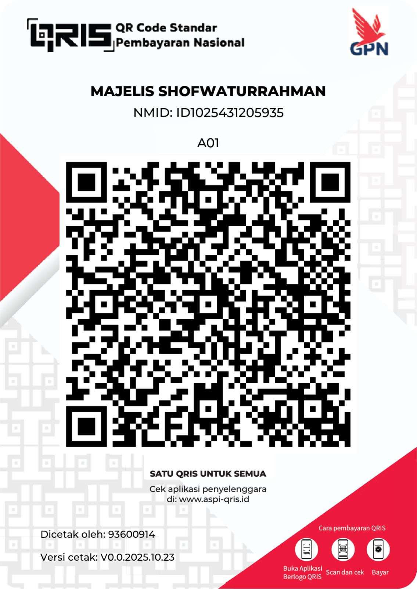

Pusat informasi kajian dan dokumentasi kegiatan Majelis Shofwaturrahman.
Kumpulan foto dan video kegiatan majelis.
| Hari | Waktu | Lokasi |
|---|---|---|
| Sabtu, 28 Februari 2026 | 21.00 | Majelis Shofwaturrahman |
Silakan lakukan donasi melalui QRIS berikut:
Konfirmasi Donasi:
Konfirmasi via WhatsApp